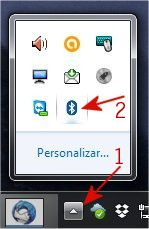
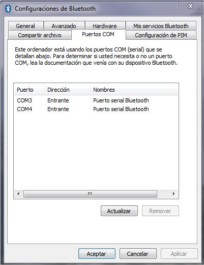
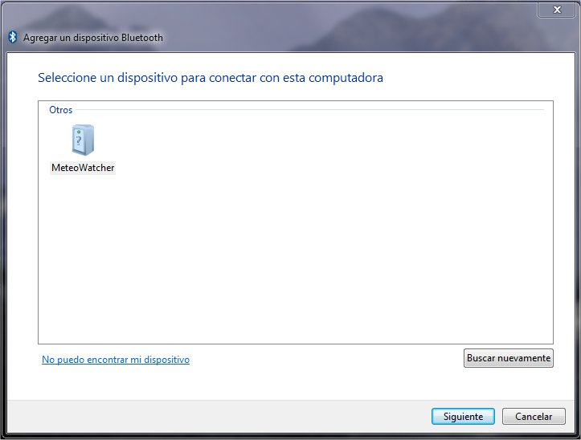
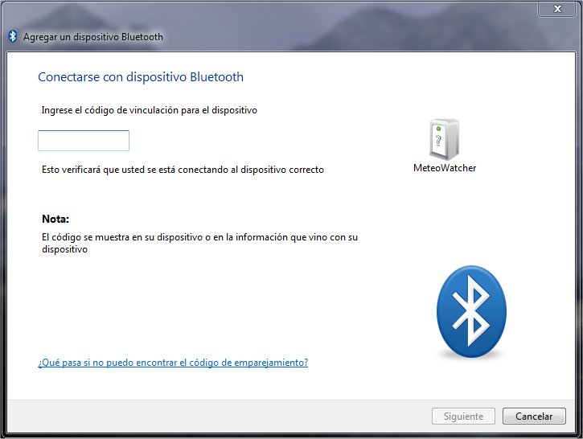
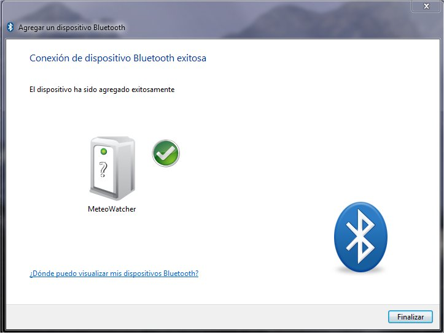
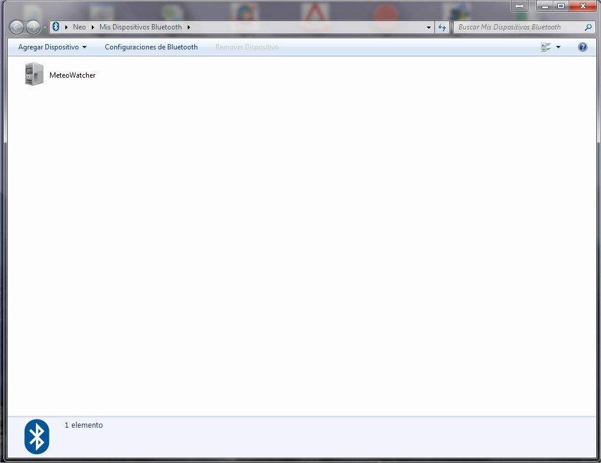
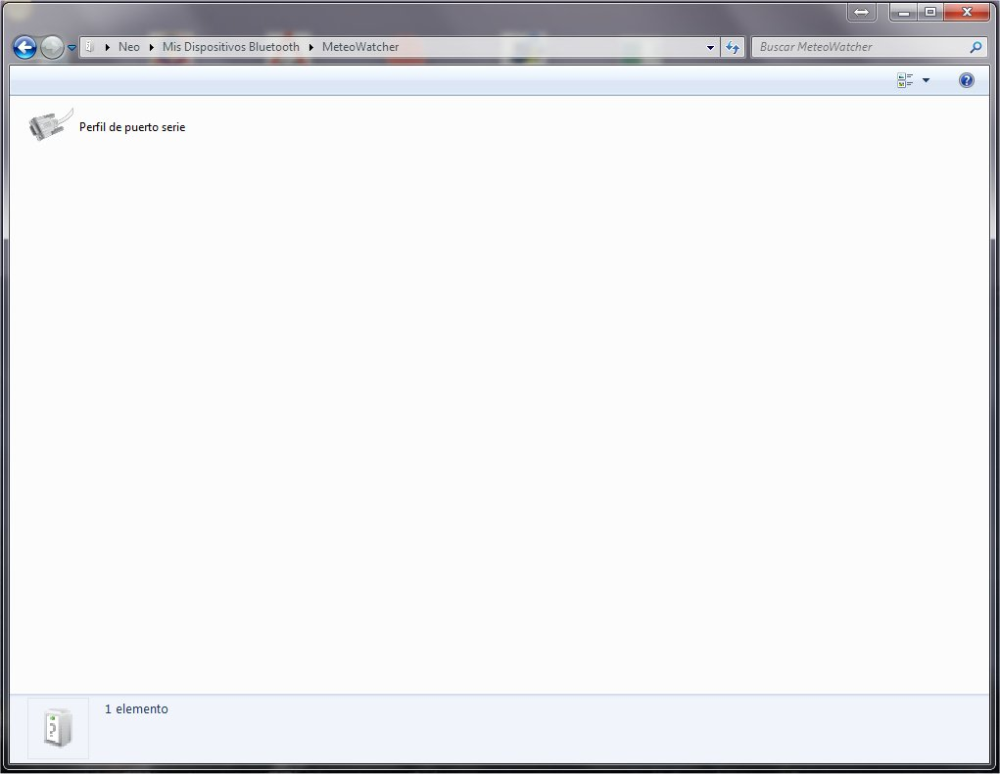
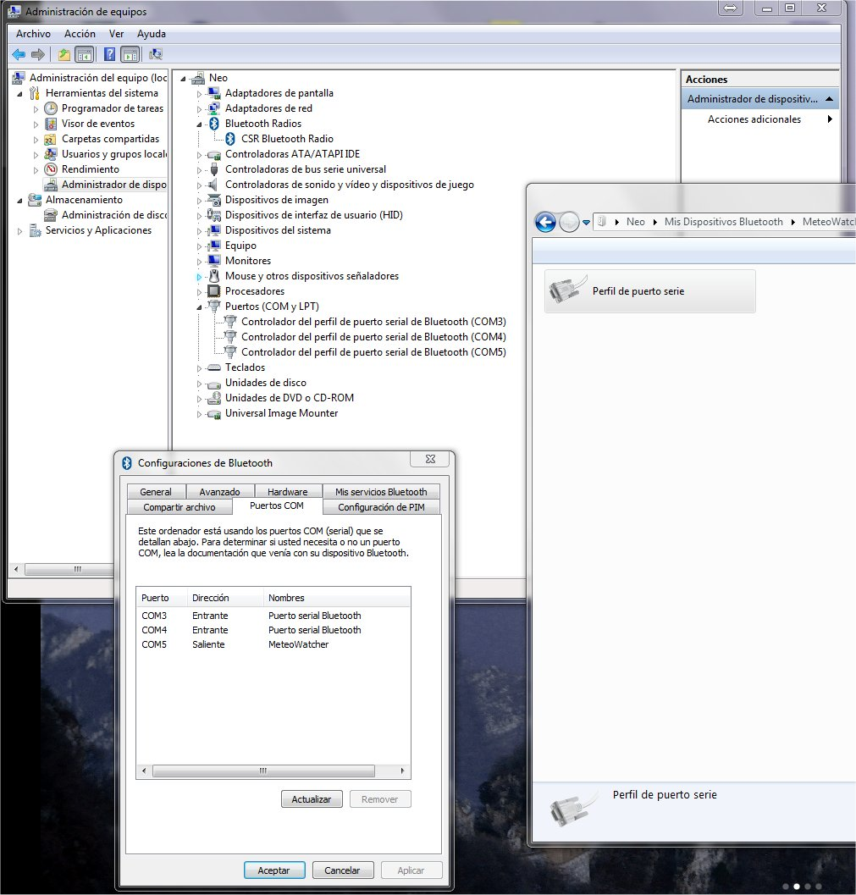
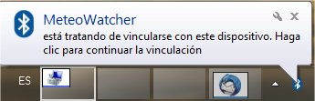

| En esta fase vamos a
vincular un nuevo dispositivo Bluetooth a nuestro sistema. Para ello,
conectaremos el Meteo Watcher a la alimentación de 12v, con cuidado siempre
de no
invertir la polaridad. Acto seguido,
conforme se muestra en la imagen, iremos a la esquina inferior derecha de la
pantalla, pulsaremos botón izquierdo del ratón donde indica
1.
Aparecerá una pequeña ventana en la que deberemos ver el icono
representativo de Bluetooth. Pulsaremos sobre él con el botón izquierdo del
ratón como se indica en 2.
Aparecerá una nueva ventana de opciones y seleccionaremos
Configuraciones de Bluetooth
con el botón izquierdo del ratón.

En esta ventana podremos
configurar multitud de opciones de Bluetooth que no serán objeto de este
Tutorial. Aunque si hacemos click en la pestaña de
Puertos COM
veremos que aparecen definidos como
Entrantes los dos puertos que
previamente se habían creado:

Cerraremos la ventana anterior y
procederemos a emparejar el Meteo Watcher con nuestro PC. Para ello,
conforme se muestra en la imagen, iremos a la esquina inferior derecha de la
pantalla, pulsaremos botón izquierdo del ratón donde indica
1.
Aparecerá una pequeña ventana en la que deberemos ver el icono
representativo de Bluetooth. Pulsaremos sobre él con el botón izquierdo del
ratón como se indica en 2.
Aparecerá una nueva ventana de opciones y seleccionaremos
Agregar un dispositivo Bluetooth
con el botón izquierdo del ratón, y de las opciones que nos muestra
seleccionaremos
Todo.
Entonces aparecerá la siguiente ventana:

Inicialmente no aparecerá ningún
dispositivo hasta que el sistema detecte la presencia del Meteo Watcher.
Seleccionamos MeteoWatcher
y pulsaremos el botón Siguiente.
En la siguiente ventana nos solicitará que
escribamos el PIN de vinculación:

En el recuadro escribiremos el código PIN
del MeteoWatcher: 1234
y pulsaremos
Siguiente.
Con lo que habremos terminado el proceso de vinculación del Meteo Watcher:

Una vez cerrada la ventana anterior,
procederemos a habilitar definitivamente nuestros Meteo Watcher, creando el
puerto serie que nos permitirá dialogar con él. Para ello,
conforme se muestra en la imagen, iremos a la esquina inferior derecha de la
pantalla, pulsaremos botón izquierdo del ratón donde indica
1.
Aparecerá una pequeña ventana en la que deberemos ver el icono
representativo de Bluetooth. Pulsaremos sobre él con el botón izquierdo del
ratón como se indica en 2.
Aparecerá una nueva ventana de opciones y seleccionaremos
Mostrar dispositivos Bluetooth
con el botón izquierdo del ratón.
Y obtendremos la siguiente ventana:

Abriremos el dispositivo (doble click
con el botón izquierdo del ratón) y tendremos la siguiente ventana:

Seleccionaremos
Perfil de puerto serie
con el botón derecho del ratón e indicaremos
Crear puerto.
Una vez creado este nuevo puerto serie (en este caso COM5), y si miramos en
Configuraciones de Bluetooth / Puertos
COM, veremos que este puerto figura
como Saliente
y vinculado con el MeteoWatcher.

Para dialogar con MeteoWatcher deberemos
seleccionar el COM5
(en el caso de este ejemplo). No hay que olvidar que cada vez que abramos el
programa de control y se vaya a establecer la comunicación por el COM Serie
se abrirá una ventana de diálogo que nos pedirá demos el PIN de vinculación:

Los conexiones Bluetooth son cómodas y
prácticas, pero requieren un cuidado extremo en su configuración, o pueden
convertirse en fuente de problemas.
Aunque dependerá del sistema operativo y
el software utilizado en la implementación de los protocolos de
comunicaciones Bluetooth, es posible (como es el caso del CSR Harmony que
incluye el adaptador USB) que sea necesario que el programa de control del
Meteo Watcher se ejecute con privilegio de Administrador. En el caso de que
éste a su vez ejecute un programa que interactúe con otros programas (POTH,
por ejemplo) todos deberán ejecutar con privilegio de Administrador, o en su
defecto, deberá desactivar el UAC (Control de Cuentas de Usuarios) de las
Windows.
He probado la implementación de la
pila de software de Bluetooth de Thosiba 8.00.03T y va muy bien y no es
necesario ejecutar en modo Administrador para que los programas funcionen.
Es una distribución freeware (sólo requiere registrarse) que admite
dispositivos no Thosiba. Lamentablemente Thosiba ha discontinuado su
soporte. La he podido probar y va perfecta con el adaptador USB Bluetooth.
La podrás encontrar en Internet, y alguna solución (cambiando una DLL) que
permite salvar el tema del registro.
No recomiendo usar la implementación que
traen las propias Windows, aunque
aquí encontrará una guía de cómo
configurarlas.
He intentado explicar todo el proceso paso
a paso, y aunque pueda parecer complejo, veréis que una vez lo hagáis una
vez, es muy simple. |